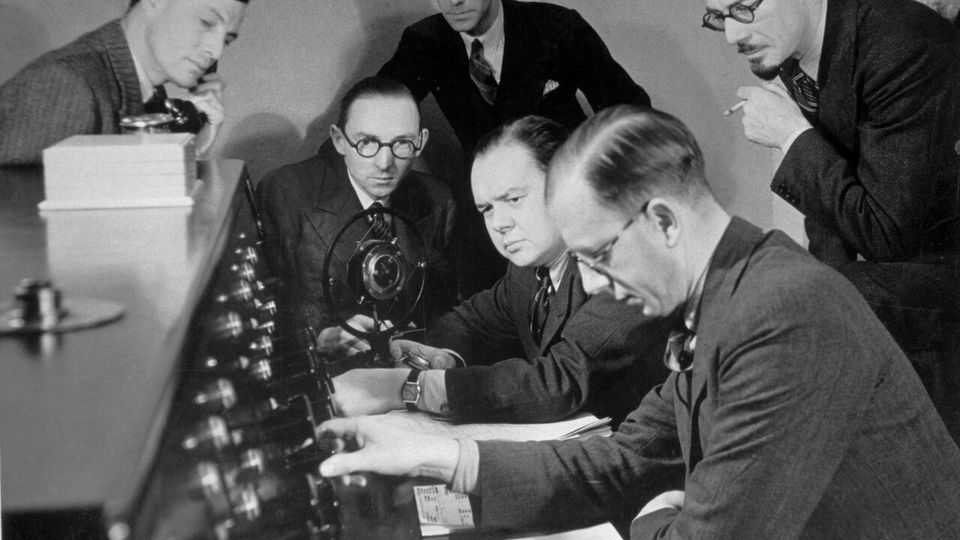

The BBC switches off its oldest service
Long-wave radio’s time is up. Terrestrial television will surely follow
June 25th 2026

BERLIN, LONDON, Paris, Droitwich. In the 1930s a Midlands town of barely 5,000 people stood out on the dials of British wireless sets, which used the places from which stations were transmitted to denote their frequencies. In 1934 the BBC switched on the corporation’s most powerful radio transmitter, near Droitwich. Two 700ft-high (213-metre) steel masts, at the time the tallest structures in the country, still send “long wave” broadcasts across Britain and deep into Europe. During the second world war they transmitted nonsense messages (“The rabbit is going down his hole”) that were decoded by the French resistance. More recently they have carried baffling phrases understood only by cricket fans tuning into “Test Match Special”.
On June 27th the BBC will stop broadcasting Radio 4 Long Wave. It blames the cost of maintaining out-of-date technology. Droitwich uses two metre-high ceramic and metal valves, which are no longer made. Almost no one in Britain will notice. But it is the first nick in what the broadcaster hopes will eventually be a slashing of expensive radio and TV transmissions.
Devotees of long wave insist it is not obsolete. They say nuclear submarines listen for long-wave broadcasts of the “Today” programme to confirm Britain hasn’t been annihilated. Absurdly, that is not an urban myth, says James Jinks, a military historian. But the Royal Navy has other ways to monitor the country’s vital signs. Fans also point to the importance of the shipping forecast. Yet here too, newer technology has eclipsed the bulletins. Mike Roach of the National Federation of Fishermen’s Organisations notes that boats get detailed information from VHF (very high frequency) radio or satellites.
A trickier argument for the BBC is that long wave reaches remote places. Not everyone can tune in via the internet. In future, though, they will probably have to.
Britain’s masts, including those at Droitwich, were sold off in 1997 to help fund the transition to digital TV. They are now operated by Arqiva, a private company, from which broadcasters rent bandwidth. Maintaining countrywide radio and TV coverage when most people are moving to streaming makes little financial sense. The BBC spends roughly £300m ($395m) a year on terrestrial-TV transmission, according to Enders Analysis, a media-research firm. Mobile-network operators covet the spectrum for 5G.
In February the Labour government began a review into the future of radio broadcasts. For TV, the BBC and other broadcasters are keen to go internet-only as soon as 2034, but the government worries about antagonising old voters without broadband connections. A report in 2024 by academics at the universities of Exeter and Leeds found that 1.5m households, or 5%, will still rely on terrestrial TV by 2040.
On June 23rd the government published a green paper in which it promised to set a timeline for ending terrestrial TV, proposing 2034 as the earliest possible date and 2044 as the latest. Turning pensioners’ TVs dark will provoke a bigger backlash than switching off crackly long wave will. But once again little Droitwich is ahead of its time. ■
For more expert analysis of the biggest stories in Britain, sign up to Blighty, our weekly subscriber-only newsletter.